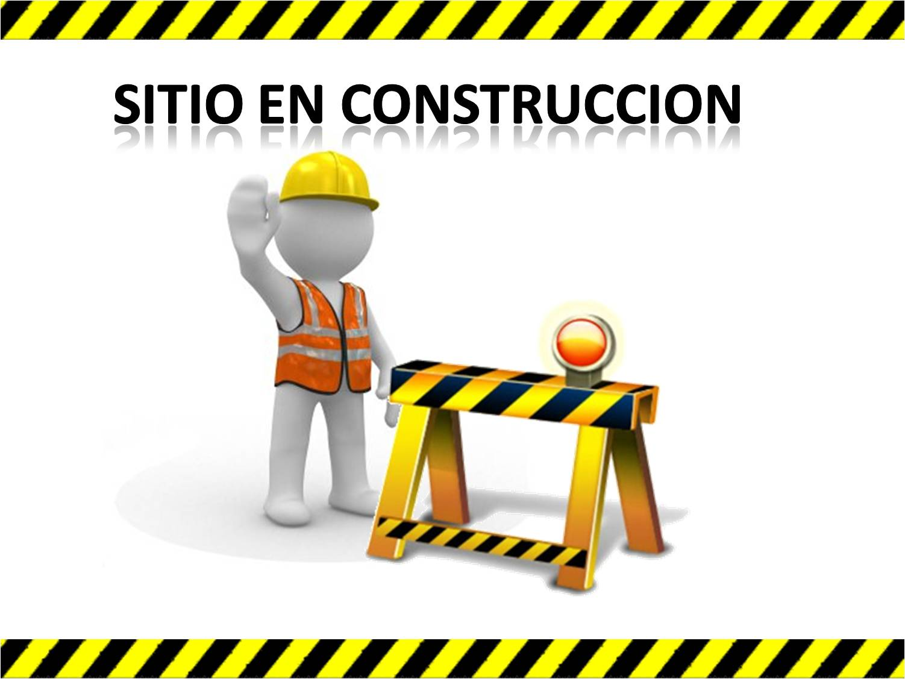

Aplicación práctica
Pasos por sección
Qué tipos de pasos, movimientos y figuras encajan mejor con cada parte de la canción.
Aquí se detallarán los tipos de pasos, movimientos y estilos que encajan mejor con cada parte de la canción (intro, derecho, majao, mambo, etc.).
